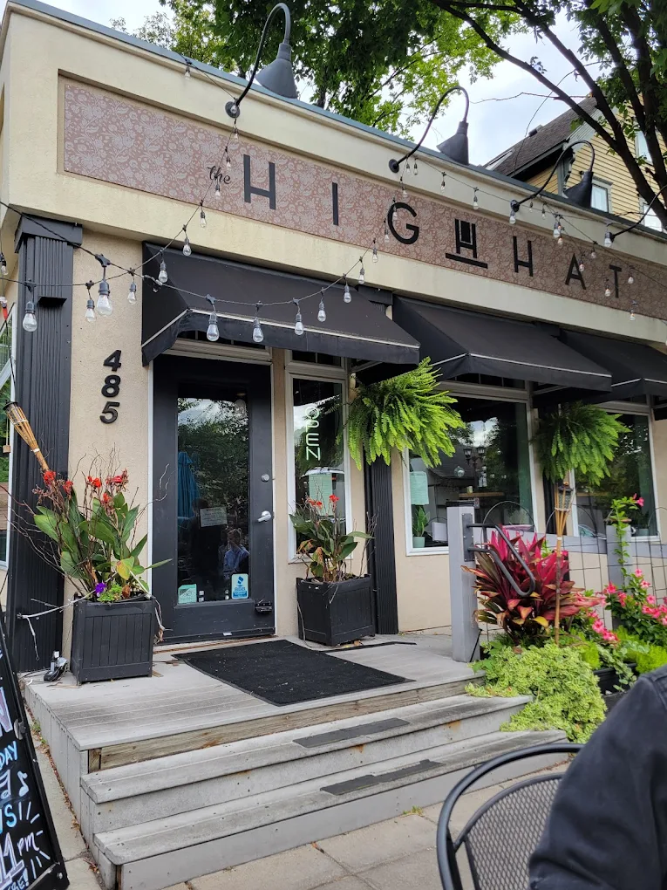
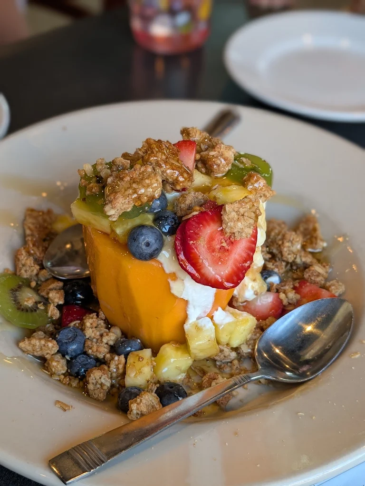
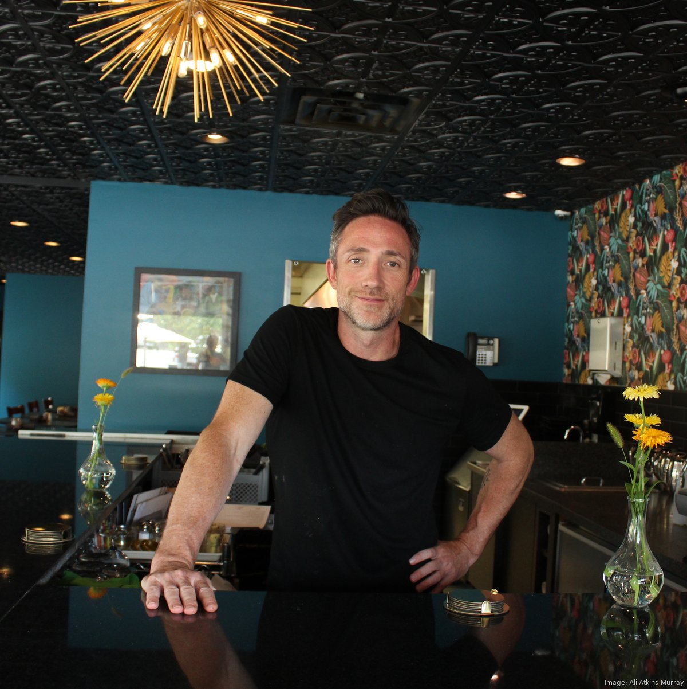
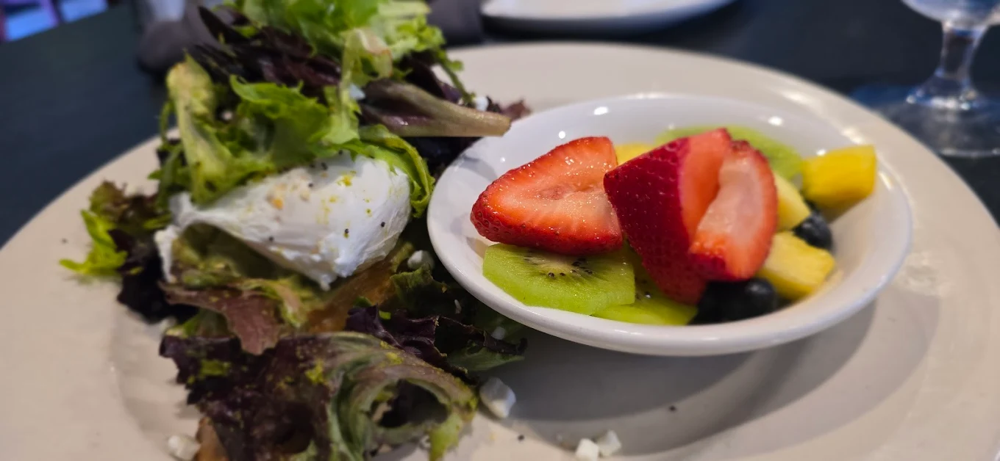
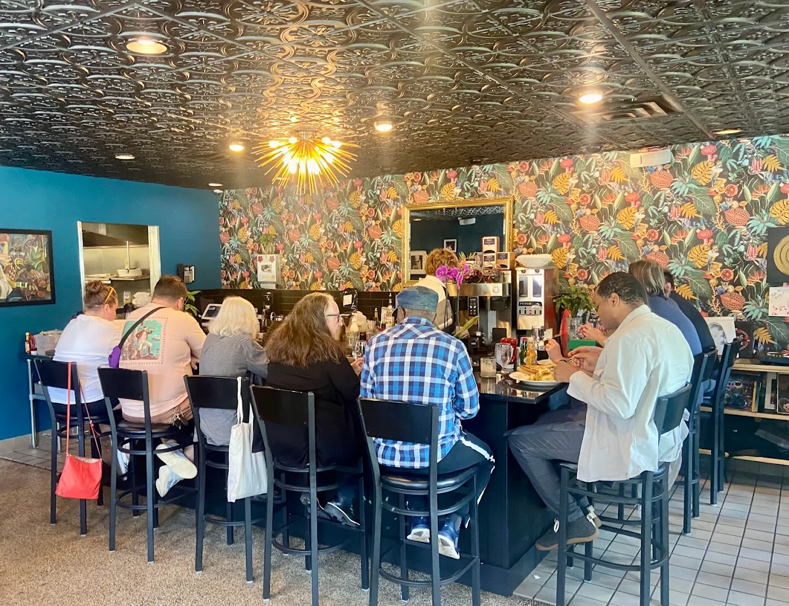
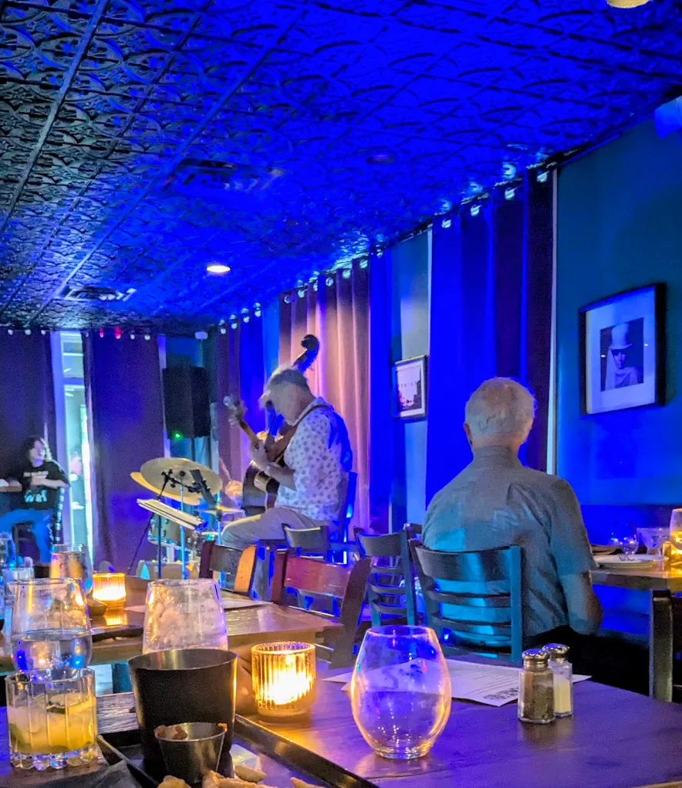

Historic Cathedral Hill
Welcome to The High Hat, St. Paul's newest culinary gem nestled in the heart of Saint Paul’s Historic Cathedral Hill. Occupying the charming space that once housed Bon Vie Bistro and A Piece of Cake bakery, The High Hat opened its doors in 2023.

A Fusion of Flavors
At The High Hat, we believe that dining out should be an adventure for your taste buds and a personal and interactive experience for all of our guests. Our menu is a delightful fusion of classic American fare and bold flavors from Southwest and South American cuisines.

Expertise in Hospitality
The High Hat is the brainchild of Michael Noyes, a veteran of the Twin Cities restaurant scene. With over two decades of experience, Michael brings a wealth of culinary knowledge and a passion for hospitality to the table.

Crafted with Quality
From our blue corn pancakes to our legendary caramel and cinnamon rolls – individually baked in cast iron skillets and served piping hot – each dish is thoughtfully prepared using the freshest ingredients.

Our Commitment
At High Hat, we’re committed to supporting local suppliers, using seasonal ingredients, and providing a warm, welcoming atmosphere for our community.

Join Our Community
From our cozy, moody interior to our sun-dappled patio, High Hat is the perfect spot to start your day or enjoy a leisurely evening. Thank you for becoming a part of our story!
